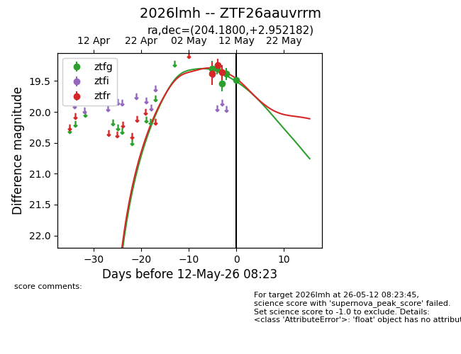
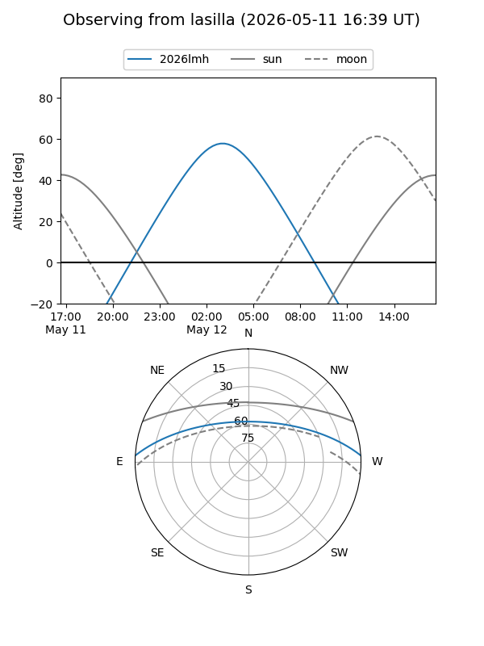
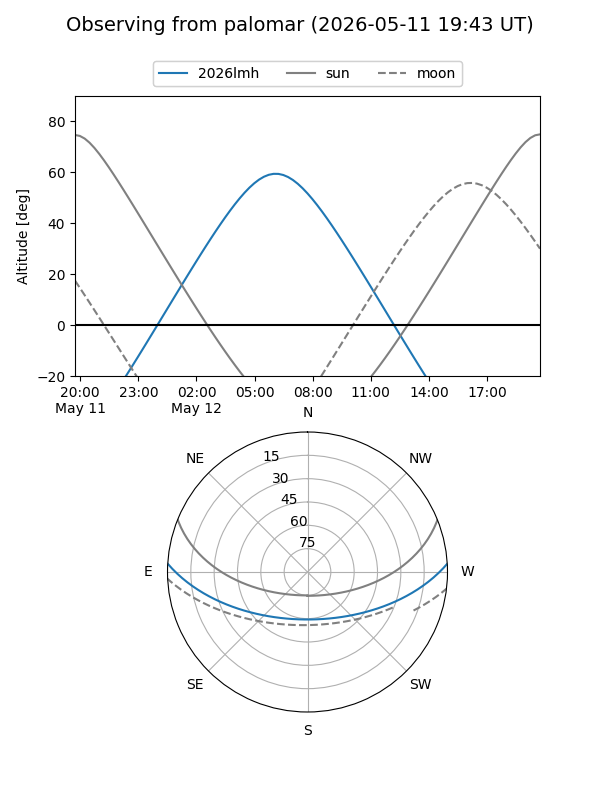
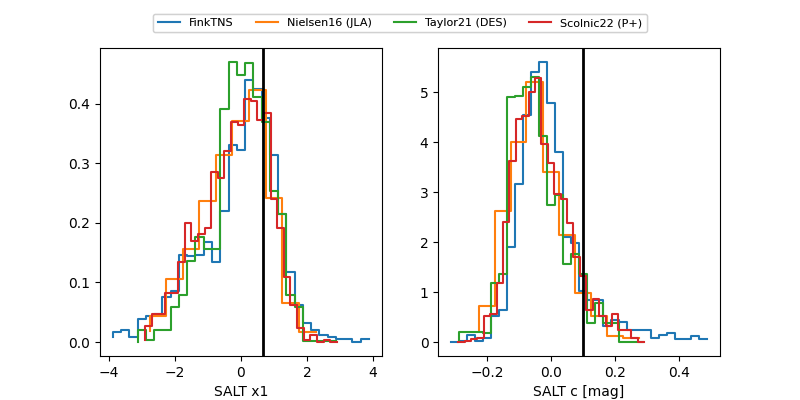

2026lmh
Target 2026lmh at 2026-05-12 08:26
Aliases and brokers:
FINK: link
Lasair: link
ALeRCE: link
TNS: link
YSE: link
alt names
ZTF26aauvrrm (ztf,fink_ztf)
2026lmh (tns,yse)
Coordinates:
equatorial (ra, dec) = 204.1800,+2.95218
equatorial (HMS+DMS) = 13:36:43.19,+02:57:07.85
galactic (l, b) = (329.0024,+63.50831)
Flags:
Photometry:
last ztfg=19.48, ztfr=19.36
5 ztfg, 3 ztfr detections
Lightcurve

Visibility


Additional plots
